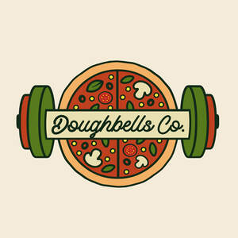

Trade Mark Journal No.2025/041 10 October 2025
UK00004272847 2 October 2025 (29,30,43)

- Class 29
- Vegetarian sausages; Sausages; Veggie burger patties; Shish kabobs; Falafel; Hotdog sausages; Uncooked sausages; Hot dog sausages; Frankfurters; Burgers; Vegetable burgers; Soya patties; Soy burger patties; Seitan [meat substitute]; Meat substitutes; Vegetable-based meat substitutes; Plant-based imitation meat; Poultry substitutes; Formed textured vegetable protein for use as a meat substitute; Ghee; Garlic butter; Prepared meals consisting primarily of kebab; Prepared meals consisting primarily of vegetables; Prepared meals consisting principally of vegetables; Frozen prepared meals consisting principally of vegetables; Prepared vegetable dishes; Prepared salads; Prepared meals consisting primarily of meat substitutes.
- Class 30
- Pizza; Pizza pies; Pizza crusts; Pizza crust; Pizzas; Pizza sauce; Pizza dough; Pizza sauces; Frozen pizza; Pizza flour; Frozen pizza crusts; Fresh pizza; Pizza spices; Pizza bases; Pizza mixes; Uncooked pizzas; Pizza dough mix; Frozen pizzas; Sauces for pizzas; Chilled pizzas; Pre-baked pizzas crusts; Prepared pizza meals; Calzones; Fresh pizzas; Pizzas [prepared]; Preserved pizzas; Naan bread; Pita bread; Garlic bread; Flat bread; Bread; Bread mixes; Bread doughs; Seitan [dried wheat gluten]; Dried wheat gluten; Dough; Snack foods consisting principally of bread; Seasonings; Flavourings and seasonings; Kebab sauce; Sauces for pasta; Sandwiches; Sandwich wraps [bread]; Pies.
- Class 43
- Restaurant services; Take-out restaurant services; Fast-food restaurant services; Self-service restaurant services; Take-away restaurant services; Mobile restaurant services; Cafe services; Hotel catering services; Café services; Business catering services; Takeaway food services; Take-away food services; Catering services for hospitals; Mobile catering services; Bar services; Takeaway services; Catering services for providing European-style cuisine; Canteen services; Catering services; Catering services for schools; Outside catering services; Catering services for the provision of food; Catering; Food and drink catering; Preparation of food and drink; Services for the preparation of food and drink; Food and drink preparation services; Preparation of food and beverages; Food preparation; Catering of food and drink; Providing food and drink; Providing of food and drink; Provision of food and drink; Catering for the provision of food and drink; Take-away food and drink services; Provision of food and drink in restaurants; Food preparation services; Hospitality services [food and drink]; Arranging of wedding receptions [food and drink]; Supplying of meals for immediate consumption; Preparation and provision of food and drink for immediate consumption; Rental of kitchen worktops for preparing food for immediate consumption; Providing food and beverages; Services for providing food and drink; Charitable services, namely providing food and drink catering; Providing food and drink for guests; Catering for the provision of food and beverages; Services for providing food; Providing food and drink catering services for exhibition facilities; Catering services for the provision of food and drink; Provision of food and beverages; Providing food and drink for guests in restaurants; Supplying meals to the homeless or underprivileged; Providing food and drink catering services for fair and exhibition facilities; Providing food and drink in bistros; Serving food and drinks; Preparation of meals; Providing food and drink catering services for convention facilities; Providing food and drink in Internet cafes; Providing of food and drink via a mobile truck; Services for the provision of food and drink; Catering of food and drinks; Serving food and drink for guests; Charitable services, namely, providing food to needy persons; Providing food to needy persons [charitable services]; Takeaway food and drink services; Catering (Food and drink -); Restaurant services for the provision of fast food; Food and drink catering for institutions.
DOUGHLORDS PARTNERS LIMITED